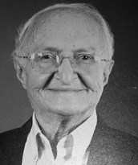

<style>
section {
        display: flex;
        flex-direction: row;
        align-items: center;
        justify-content: center;
        gap: 40px;
        margin: 40px 0;
    }


    .conteudo {
        max-width: 1000px;
        font-family: Arial, sans-serif;
        font-size: 16px;
        line-height: 1.6;
        color: #333;
        text-align: justify;
    }

    .conteudo p {
        
        margin-bottom: 16px;
    }
    img {
        width: 300px;
        height: auto;
        border-radius: 8px;
    }
</style>
<section>

    <div class="conteudo">

        <h2>JOSÉ LUIZ DA SILVA MAYA</h2>
        
        <p>Em Goiânia, tornou-se professor da Universidade Federal de Goiás (UFG), por concurso público, atuando como Professor Titular, Pró-Reitor de Graduação e Chefe de Departamento do Instituto de Ciências Humanas e Letras. Também foi Delegado Substituto do MEC em Goiás e membro do Conselho Estadual de Educação.</p>
        <p>Em 1989, foi eleito Senador da República pelo Tocantins, exercendo o mandato até 1991. Atuou ainda como Diretor de Ensino Primário do Estado de Goiás, Diretor de Ensino Superior da Secretaria de Educação do Tocantins e Presidente da Comissão Diretora da Universidade do Tocantins.</p>
        <p>Foi membro da Academia Tocantinense de Letras, onde ocupou a Cadeira nº 6, cujo patrono é Francisco Ayres da Silva, tomando posse em 2 de março de 1991, no Colégio Sagrado Coração de Jesus, em Porto Nacional. Também integrou diversas entidades culturais, sociais e educacionais.</p>
    </div>
    <div class="imagem">
        
        </div>

    

    


</section>